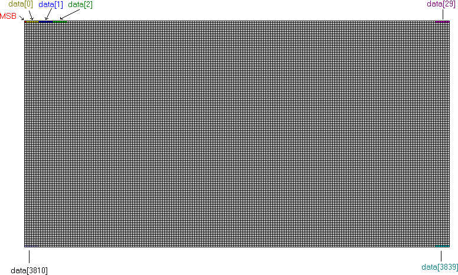

The protocol used for getting a screenshot is shown below. For information on packet formats, click here.
| Step | Direction | Packet | ||
|---|---|---|---|---|
|
|
|
|
|
SCR |
|
|
|
ACK | ||
|
|
|
DATA - Format described below. | ||
|
|
|
ACK | ||
The data packet contains a 3840-byte monochrome bitmap (1 bit per pixel). Each bit has a value of 1 if the corresponding pixel is dark or a value of 0 if the corresponding pixel is light.
The pixel order is left-to-right, then top-to-bottom (See figure below).
Byte 0 defines the first 8 pixels in the left side of the top row of
the screen. Bytes 1-29 define the rest of the first row, bytes 30-59 define
the second row, etc.
Example:
| PC: | 08 56 00 00 | Screenshot request |
| TI: | 98 56 00 00 | Acknowledgement of request |
| 98 15 00 0F <3840 bytes plus 2 byte checksum> | Screen data | |
| PC: | 08 56 00 00 | Acknowledgement of data |
The following figure demonstrates byte ordering of the pixels if the bitmap is in a 3840-element array data[]:

Remark: contrary to the TI92/92+ calculator, only the 160x100 upper rectangle is visible on the TI89. The remaining bytes are usable (in assembler for instance) but they are not visible. So, a clipping is necessary once the screenshot have been got.
Note that this format is different from the standard Windows bitmap
format, which specifies a value of 1 if the pixel is light and bottom-to-top
row order.
|
Packet Formats |
Table of Contents |
Manual Transfers |